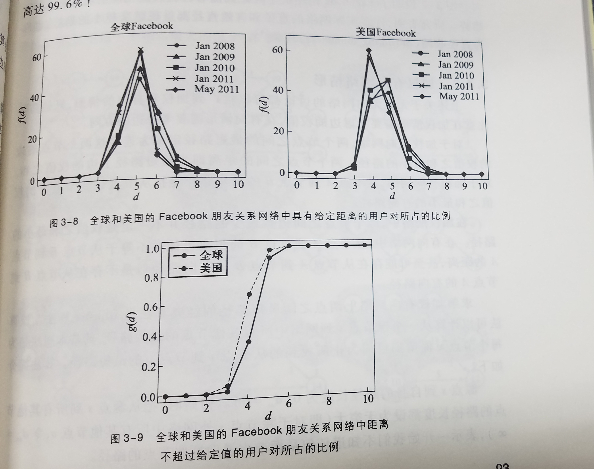

3.1 引言
复杂网络的具体问题在本章才开始进行介绍，包括网络的拓扑性质分析，网络的拓扑建模、网络的行为动力学分析与控制。书中指出，虽然网络科学看起来在基础部分和图论近乎完全一致，但是由于目前复杂网络的规模不是之前理论分析所能达到的，两者在研究方法和研究角度上都有着巨大的不同。较小规模的图可以通过图示的方法。出网络的性质，但对于大规模的网络的研究必须借助强大的计算能力和统计方法。现代网络科学更为关注网络拓扑结构的演变和网上动力学行为之间的关系。
网络规模尺度上的巨大差异使得图论和复杂网络在一些问题上的表述有所不同，经常如果去除某个点使得一个连通片分割为两个连通片那么称该点为割点，而在大规模网络中，去除单个的点和边往往难以对图的连通性产生什么影响，我们往往讨论去除多少比例的节点或边才能将网络分为不同的连通片，对网络的某个性质产生影响
近年来，人们在刻画复杂网络结构的统计特性上提出了许多概念和方法，并且利用了统计物理中的许多方法，包括相变和渗流理论、平均场理论、主方程方法等。
3.2 复杂网络的连通性
3.2.1 无向网络中的连通巨片
如果我们将地球上所有人的社会关系看作社交网络的话，那么凭直觉就可得出这个网络一定是不连通的，因为只要有一小群人（比如某个小岛上的野人）与世隔绝，那么就会形成一个小的连通片。从这个角度来看，大规模网络的连通问题通常是一个脆弱的问题，单个节点或者少数节点的行为都可能破坏整个网络的连通性问题。
但是从另外的角度来讲，社会网络存在大规模的连通片，也被称为连通巨片（Giant component），它包含了网络中相当比例的节点，在Facebook的社交网络连通片的分析中，虽然存在着多个连通片但是第一大的连通片包含了90%的节点。节点规模和此规模下的连通片数量大致是程幂律分布的
3.2.2 有向网络中的蝴蝶结结构
实际的大规模有向网往往既不是强连通的也不是弱连通的，但是许多有向网络往往有一个包含了网络中相当部分节点的很大的弱连通片，称为弱连通巨片（Giant weakly connected component,GWCC）。这一弱连通巨片又往往具有一种包含4个部分的蝴蝶结结构（Bow-tie structure）
（1）强连通核（Strongly connected core，SCC）：也称为强联同巨片（Giant strongly connected component），它位于网络的中心。SCC任意两点都是强连通的，即存在从任一节点到另一节点的有向路径
（2）入部（IN）：包含那些可以通过有向路径到达SCC，但不能从SCC到达的节点。也就是说，一定存在从IN中任一节点到SCC中任一节点的有向路径
（3）初部（OUT）：包含那些从SCC中任一节点到OUT中任一节点的路径，反之则不行，从In中任一节点都有到达Out中任一节点的路径，该路径必通过SCC。
（4）卷须（Tendrils）：包含哪些既无法到达SCC又无法从SCC到达的节点。对于挂在IN上的任一卷须节点，必至少存在一条从IN中某一节点到该节点的不需要经过SCC的路径；对于挂在Out上的任一卷须节点，必至少存在从该节点到OUT中某一结点的有向路径。
3.3 节点的度与网络稀疏性
3.3.1 度与平均度
度(Degree)是刻画单个节点属性最简单而又是最重要的概念之一。
无向网络中节点i的度$k_i$定义为与节点直接相连的边的数目。对于没有自环和重边的简单图，节点i的度$k_i$也是与节点i直接有边连接的其他节点的数目。网络中所有节点的度的平均值称为网络的平均度（Average Degree），记为<k>。
给定网络G的邻接矩阵$A=(a_{ij})_{N*N}$，我们有
$k_i={\sum^N_{j=1}}a_{ij}={\sum^N_{j=1}a_{ji}}$ $<k>=\frac{1}{N}\sum^N_{i=1}k_i=\frac{1}{N}\sum^N_{i,j=1}a_{ij}$
网络节点的度与网络边数M之间有如下关系：
$2M=N<k>=\sum^N_{i=1}k_i=\sum^{N}_{i,j=1}a_{ij}$
过于基础的部分不再进行介绍，属于图论中的基础知识。
网络的平均出度和平均入度是相同的
节点i的强度定义为$s_i=\sum^N_{j=i}w_{ij}$
如果G是有向加权网络，那么节点i的出强度（Out-strength）和入强度（In-strength）分别定义为：
$s_i^{out}=\sum^N_{j=1}w_{ij},s^{in}_i=\sum^N_{j=1}w_{ji}$
3.3.3 网络稀疏性与稠密化
一个包含N个节点的网络的密度（Density）定义为网络中实际存在的边数和网络中的最大边数的比值
$\rho=\frac{M}{\frac{1}{2}N(N-1)}$
对于有向网络将分子上的$\frac12$q去除即可，实际上，大规模网络的一个实际特征就是稀疏性。在2011年FaceBook的活跃用户大约有7.21亿，但却只有687亿条边，网络平均度<k>$\approx190$，密度$\rho\approx0.3*10^{-7}$，意味着这是一个十分稀疏的网络 。
实际网络的规模一般也是随时间而变化的，而且许多网络的节点和边在很长一段时间里是呈增加趋势的。那么随着时间的变化，网络是愈发稠密还是愈发稀释呢？此时，平均度<k>是一个很好的刻画方式，平均度和网络密度间存在着如下简单的关系：
<k>$=\frac{2M}{N}=(N-1)\rho\approx{N}\rho$ （3-11）
将时刻t网络中的节点数和边数分别记为N(t)和M(t)。如果两者呈线性比例关系，即M(t)~N(t)，那么由式(3-11)可见平均度为一常数，如果两者呈平方关系，即M(t)~N2(t)，那么就意味着，平均而言，每个节点都会与网络中一定比例的其他节点直接相连，整个网络会演化成为一个非常稠密的网络。研究表明，许多网络的演化是介于两种情形之间的。即服从如下的超线性关系，也称为稠密化幂律（Densification power law）：
$M(t){\sim}N^{\alpha}(t)$ 1<$\alpha$<2< center>
这意味着，一方面实际网络会随着时间的变化而越来越稠密，但实际网络永远是稀疏的。
lnM(t)$\approx$$\alpha(lnN(t))+C$,1<$\alpha$<2< center>
在双对数坐标下点的规模和边的规模呈线性相关
3.4 平均路径长度和直径
3.4.1 无权无向网络的情形
1.平均路径长度
网络中两个节点i，j之间的最短路径（Shortest Path）也称为测地路径（Geodesic Path），是指连接两个节点的边数最少的路径，节点i和j之间的距离$d_{ij}$定义为连接两个节点的最短路径上的边的数目，也称为两个节点之间的测地距离（Geodesic distance）或跳跃距离（Hop distance）。
网络的平均路径长度（Average distance）L，定义为任意两个节点之间的距离的平均值，即
其中N为网络节点数。网络的平均距离长度也称为网络的特征路径长度（Characteristic path length）或平均距离（Average distance）。
以FaceBook为例来看，目前存在的大多数复杂网络中，平均距离都在缩小，在2011年，fb中用户的平均距离仅为4.74。两点之间的最短路径可能不唯一，但最短路径长度是唯一的，要么是无穷大要么是一个确定的数。一个拥有N个节点和M条边网络的平均路径长度可以用时间量级为O(MN)的广度优先遍历算法来确定。
但是由于大型网络往往是不连通的，所以可能会导致距离为无穷大的情况，导致网络中的平均距离无法计算。此时可以采用两种方法进行处理，第一种是放弃此类节点的计算，适用于大多数节点都处于最大的连通片的情况；另一种方法是吧平均路径定义为网络中两点距离的简谐平均（Harmonic mean）：
按照上式计算，两点距离为无穷大对应距离的倒数为0，由此得到的平均路径长度总是有限值。如果我们认为两点之间的距离越短那么它们的传输效率就越高，那么GE就定量反映了网络之中节点之间发送信息的平均效率，因此GE也被称为全局效率（Global efficiency）。
2.网络直径
网络中任意两个节点之间的距离的最大值称为网络的直径（Diameter），记为
$D=max_{ij}d_{ij}$
进一步讲，我们可能更为关心的是网络中绝大部分用户对之间的距离。为此，可以统计出距离为d的连通的节点对的数量占总数量的比例，记为f(d)；并进而统计网络中距离不超过d的连通的节点对的数量占整个网络中连通的节点对数量的比例记为g(d)
一般的如果整数D满足
$g(D-1)<0.9,g(d)\geq0.9$< center>
那么就称D为网络的有效直径(Effective diameter)。换句话说D是使得90%的连通的节点对可以互相到达的最小的步数。我们可以通过插值的方法吧有效直径推广到非整数的情形。为此，对任一实数r，假设$d\leq{r}<d+1$，通过线性插值的方式定义g(r)如下：
g(r)=g(d)+(g(d+1)-g(d))(r-d)
如果实数D满足g(D)=0.9,那么就称D为网络的有效直径。有效直径通常是一个比直径更为鲁棒的量，因为去除几条边后可能会对网络的直径产生影响，但是对网络的有效直径并没有什么影响。
研究表明，许多实际网络的直径和有效直径都呈现越来越小的趋势，也称为直径收缩现象。
3.4.2 加权有向网络情形
该章节介绍了最短路径算法Dijstra算法，在此不做赘述，此外还提到了Bellman-Ford算法和一种由谷歌工程师发明的算法。
3.5 聚类系数
3.5.1无权无向网络的情形
通常使用聚类系数来定量刻画任意两个朋友间也互为朋友的概率：
假设网络中的节点i的度为ki,即它有ki个直接有边相连的邻居节点。如果节点i的ki个邻节点之间也互为邻居，那么，在这些邻节点之间就存在$k_i(k_i-1)/2$条边。在网络中，一个度为ki的节点i的聚类系数Ci的定义为
$C_i=\frac{E}{(k_i(k_i-1)/2)}=\frac{2E_i}{k_i(k_i-1)}$
其中$E_i$是邻居节点之间实际存在的边数。
我们还可以等价的给出节点i的聚类系数（几何形式）
$C_i=\frac{包含节点i的三角形的数目}{以节点i为中心的连通三元组的数目}$ 给定网络的邻接矩阵$A=(a_{ij})_{N*N},那么包含节点i的三角形数目为$$E_i=\frac12\sum_{j,k}a_{ij}a_{jk}a_{ki}=\sum_{k>j}a_{ij}a_{jk}a_{ki}$ 因此节点i的聚类系数可如下计算：$C_i=\frac{2E_i}{k_i(k_i-1)}=\frac1{k_i(k_i-1)}\sum^N_{j,k=1}{a{ij}a{jk}a{ki}}$